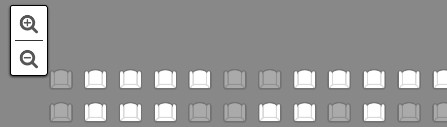
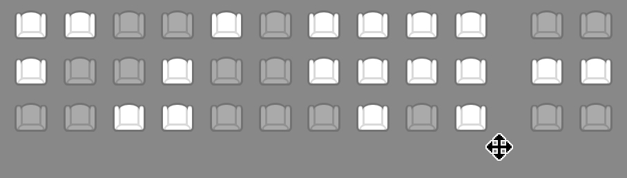
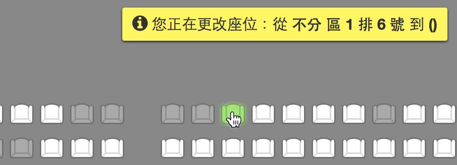
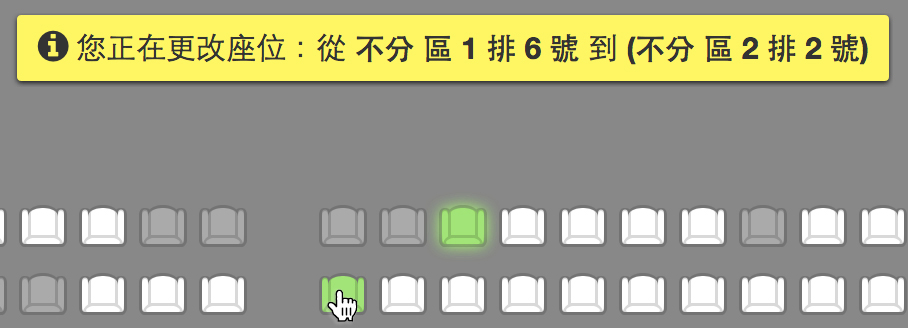
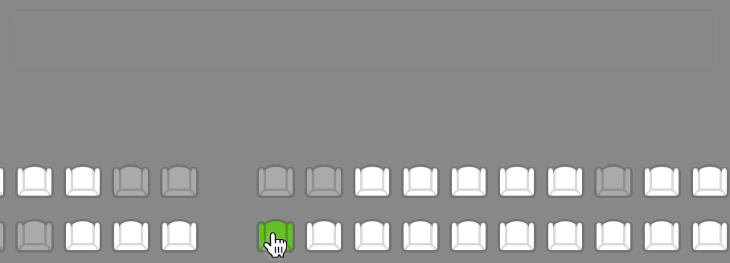

座位圖使用說明
基本操作
座位圖操作方式如下：

- 座位圖的左上角有 及 圖示，點選 圖示可放大座位圖；點選 圖示可縮小座位圖。

- 位圖中沒有座位的空白區域，可看見滑鼠指標變更為十字形，此時可拉動座位圖調整顯示範圍。
換位說明
若想變更已選定的座位，可依下列步驟進行換位：
請注意：僅支援相同票種及金額座位的操作。

- 點選目前已選但想更換的座位，將會看見「您正在更改座位」的提示訊息。

- 將滑鼠移至想更換的目標座位上，可從提示訊息中看見該位置的排號。

- 若確認無誤，點選該座位即完成換位。